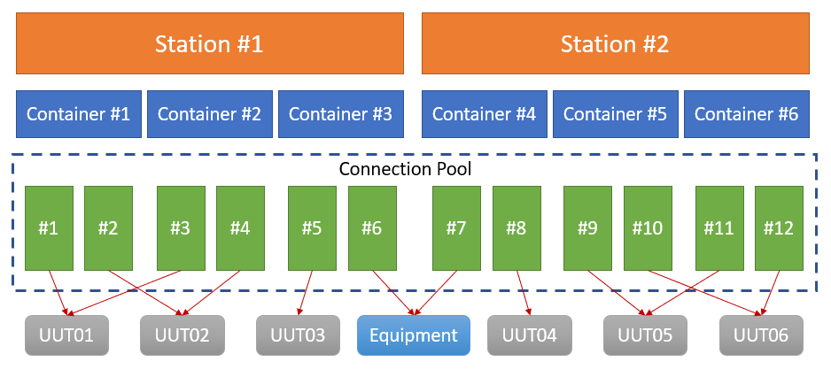
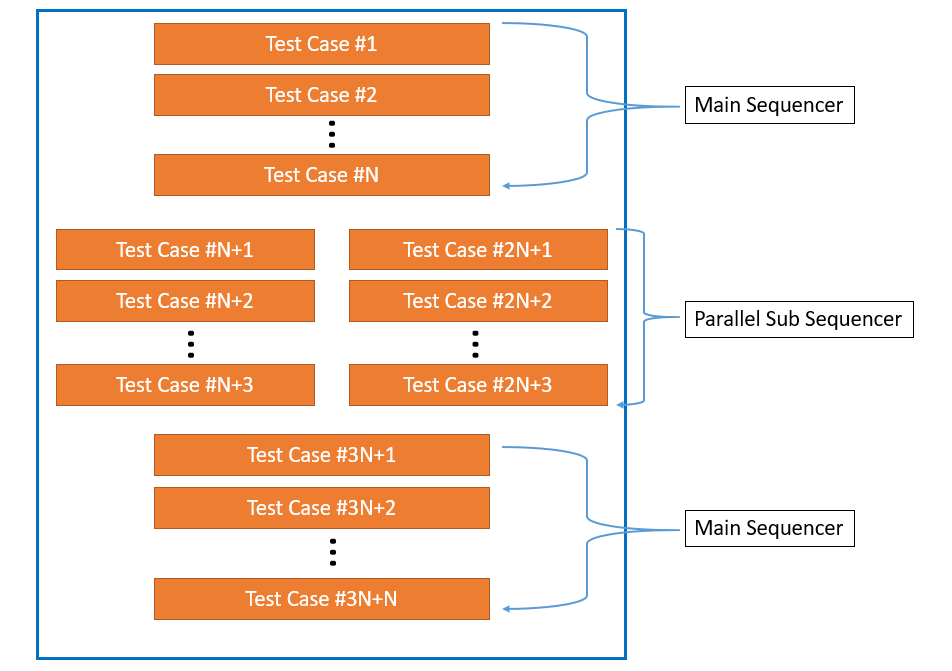
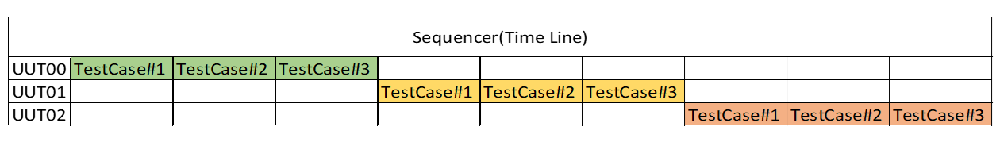
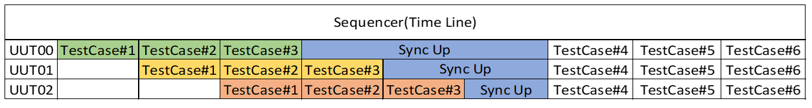

Basic Features¶
Genesis与其它自动化框架类似, 也提供一系列的功能模块给到用户, 以减少用户的代码开发量, 专注于测试用例本身, 将时间与精力用在更有价值的地方.
针对于电子产品的测试, Genesis提供了硬件设备的共享方案与机制, 以减少硬件成本支出.
日志记录与管理 Logs¶
Genesis的测试日志分为两类.
一类是CLI指令的输出, 输出结果与手工操作是一模一样的.
另一类是用户日志(SEQ LOG), 此类日志输出用户期望的数据, 比如测试过程中的程序变量, 测试进度相关的标识性字符等.
Genesis使用Python的Logging模块存储日志, 在 接口库函数 中提供接口供用户调用, 用户自行设置日志级别, 常用的日志级别有：
log.debug()
log.info()
log.warning()
log.error()
不同级别的日志在操作界面上会以不同颜色字体显示, 比如log.INFO()为白色, log.error()为红色.
当日志文件的大小达到指定值的时候, Genesis会将日志文件重命名存档, 然后将日志存入一个新的日志文件.
测试日志以时间标识(年月日)为目录层级, 保存在本地服务器, 保存路径示例如：
container_name/yyyy/mm/dd/container_name_yyyy_mm_dd_hh_mm_ss_seq.log
测试报告与管理 Report¶
TBD
测试操作界面定制 Configuration¶
简单灵活的配置方式是充分利用硬件, 提高测试效率的必要条件.
Genesis提供更优的解决方式, 让用户可以根据硬件设备与UUT(Unit Under Test)的规划来合理安排界面内容.
如果一台Genesis测试服务器需要测多种产品, 可以根据不同的硬件配置来安排Station的数量.
每个Station下, 可以安排若干个Container, 来满足对测试产出的需求.
每个Container下, 可以配置若干个Connection, 来满足对设备的连接需求, 以最高的效率完成测试任务.
每个Connection都是独立的, 可以被任意一个Container调用, 或是共享.Genesis提供方法设置Container与Connection的默认归属关系.
测试用例编排与执行 Sequencer¶
测试用例(TestCase)编排与执行是核心, Genesis组织测试用例的方式简单直接.
Genesis按照执行的顺序组织测试用例.测试用例之间可以是相互独立的, 也可以是承上启下的.
Genesis提供Sub Sequencer功能(多线程执行), 可以显著地提高测试效率.如图所示：
Genesis为测试用例(TestCase)与Sequencer提供诸多属性, 可以跟据测试的实际需要选用.
Stop On Error：如果测试失败, 设置测试任务是否停止.
Iteration Qty：重复次数.测试用例或是Sequencer会重复进行, 直到达到设定的次数为止.
Iteration Time：重复时间.测试用例或是Sequencer会重复进行, 直到达到设定的时间为止.
Jump by Condition：根据测试用例的返回情况, 选择性地跳至指定的测试用例, 会忽略中间的测试用例.
锁机制与同步机制 Locking & Sync Up¶
大多数情况下, 同时测试多个产品UUT, 需要共享同一套测试设备, 有些测试设备非常昂贵, 一般会采取多个UUT共享同一套设备的方式, 尽量使昂贵的测试设备处于运转状态, 减少设备闲置时间, 提高测试效率.
Genesis提供锁(或串行Serial)机制与同步机制, 达到测试设备共享的目的.
 